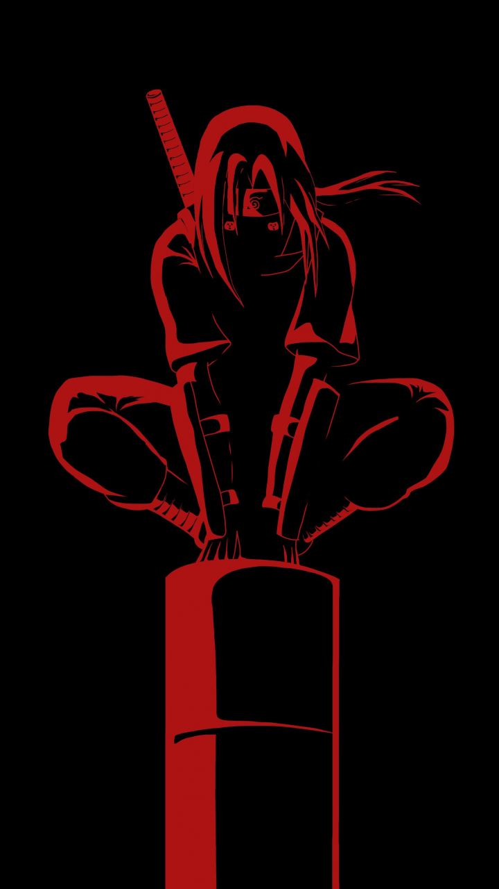
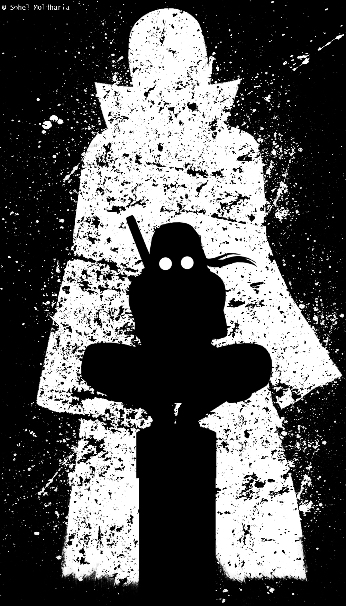
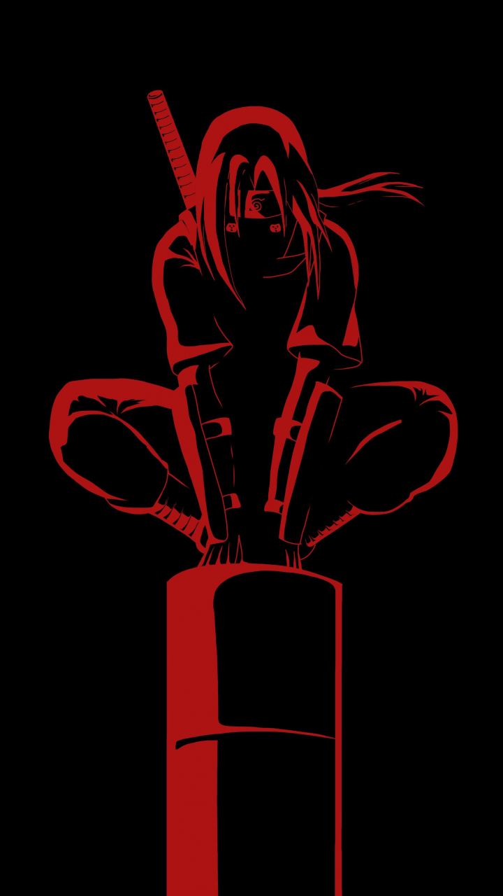
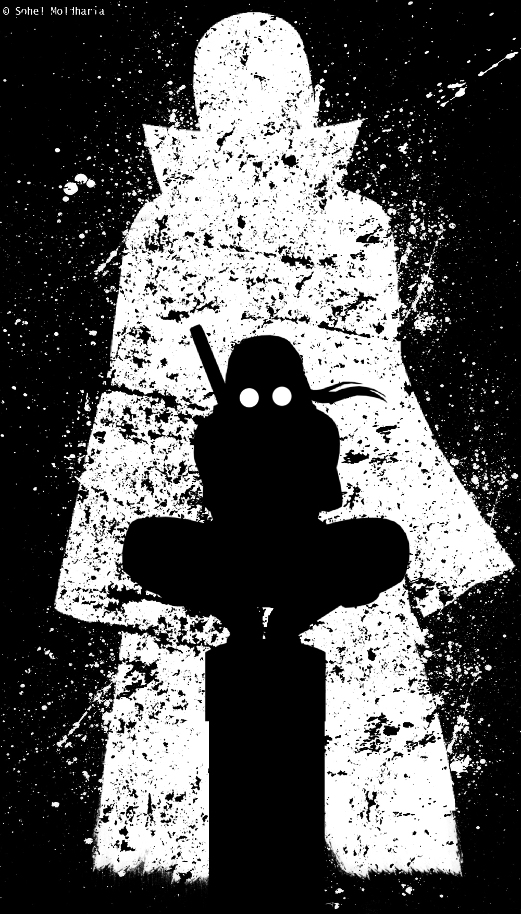

Itachi Uchiha (うちはイタチ, Uchiha Itachi) was a shinobi of Konohagakure’s Uchiha clan who served as an Anbu Captain. He later became an international criminal after murdering his entire clan, sparing only his younger brother, Sasuke. Itachi’s actions were shrouded in mystery, and his motives were revealed to be more complicated than they seemed. In truth, he acted out of loyalty to his brother and village. His involvement with the Akatsuki, an organization of rogue ninja, brought him into frequent conflict with Konoha. Despite his dark deeds, Itachi remains a complex and tragic figure in the Naruto universe
 



1.Background:
Itachi was a shinobi from Konohagakure’s Uchiha clan.
He served as an Anbu Captain.
Later, he became an international criminal after wiping out his entire clan, sparing only his younger brother, Sasuke.
Itachi joined the notorious organization Akatsuki, leading to frequent conflicts with Konoha and its ninja, including Sasuke, who sought revenge for their clan’s demise1.
2.Personality:
Itachi is complex and enigmatic.
His motives were revealed to be more complicated than they seemed.
His actions were ultimately in the interest of his brother and village, making him a loyal shinobi of Konohagakure to the very end.
3.Abilities:
Sharingan: His mastery of the Sharingan granted him heightened perception, the ability to see through illusions, and the power to copy and predict opponents’ techniques.
Mangekyō Sharingan: His Mangekyō Sharingan abilities included Amaterasu, Tsukuyomi, and Susanoo.
Genjutsu: Itachi was skilled in genjutsu, using techniques like Demonic Illusion: Mirage Crow.
4.Sibling Battle: When Sasuke finally faces off against his older brother, Itachi, the younger Uchiha emerges victorious.
However, it becomes clear that Itachi only fought Sasuke to pull out Orochimaru’s curse and give him the Amaterasu.
Zetsu even confirms that Itachi intentionally let his little brother win. After this iconic confrontation, we learn that Itachi would never have killed Sasuke.
Part of the reason Itachi agreed to wipe out their clan was to prevent a civil war in Konoha and to ensure that Danzo spared his little brother.
Itachi had told Sasuke various lies, all aimed at propelling Sasuke to greatness, even if it meant Sasuke would hate him.
5.Self-Sacrifice: Itachi carried immense guilt, sorrow, and emotional turmoil due to the heavy burden he shouldered and the pain he inflicted upon himself and his loved ones.
His tragic backstory showcases themes of sacrifice, duty, and the lengths one is willing to go to protect what one holds dear.
6.Mysterious Illness: Itachi’s death was multifaceted. He wanted to die at the hands of Sasuke to atone for his sins.
Additionally, he suffered from an unknown disease and was almost blind due to his Mangekyou Sharingan. His demise was a culmination of physical and emotional factors3.
7.Anbu Days: Before Itachi became a member of the Akatsuki, he served as an Anbu Black Ops member in Konoha.
His time in the Anbu was marked by secrecy, covert missions, and the weight of protecting the village.
Itachi’s Anbu days were filled with bloodshed, and he had to make difficult choices to maintain peace and stability.
His loyalty to Konoha was unwavering, even when he was ordered to eliminate his own clan.
8.The Truth Behind the Uchiha Massacre: The Uchiha clan was planning a coup against the village leadership due to their dissatisfaction with how they were treated.
Itachi, torn between his loyalty to Konoha and his love for his family, was tasked with preventing the coup. Danzo, a high-ranking official, ordered Itachi to wipe out the entire clan.
Itachi chose to shoulder this immense burden alone, sparing his younger brother, Sasuke. The massacre left him emotionally scarred and haunted by guilt.
9.The Truth Revealed: Throughout the series, Itachi is portrayed as a villain who killed his clan without remorse. However, as the truth unfolds, we learn that Itachi’s actions were driven by selflessness.
He sacrificed his own happiness, reputation, and sanity to protect the village and Sasuke. His love for Sasuke was genuine, and he hoped that his brother would become strong enough to avenge their clan and protect Konoha.